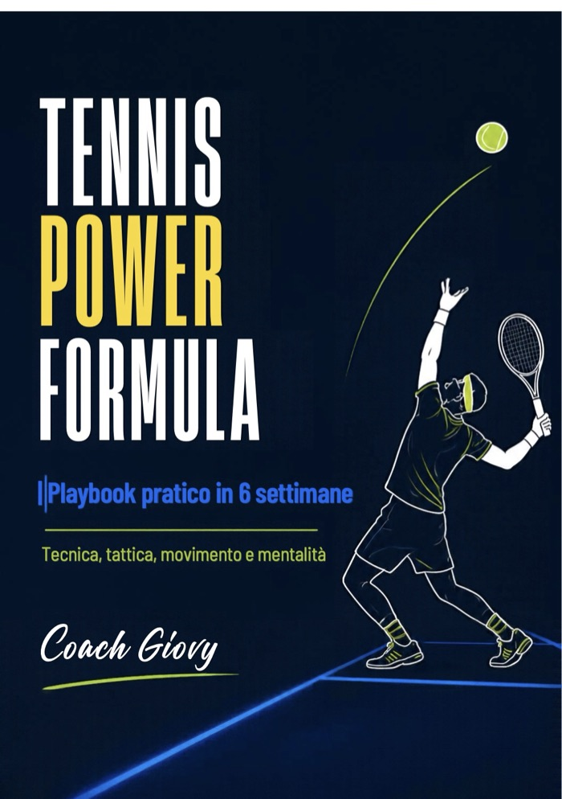
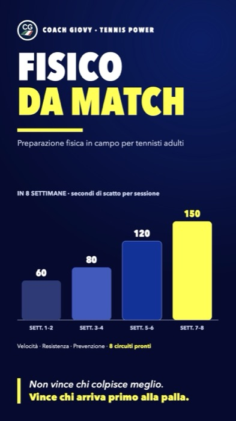

Prima di correggere un colpo, trova il tuo Blocco Madre.
Non chiudere questa pagina: alla fine del video trovi il passo successivo.
A breve qui trovi la presentazione completa. Intanto qui sotto trovi le mie due guide.
Guarda la presentazione fino in fondo: alla fine ti dico da dove partire.
Ti ho mandato il video anche via email. Se tra qualche minuto non lo trovi, guarda in Spam o Promozioni e spostalo in Principale: così ricevi anche i prossimi messaggi.
Basta allenarti a caso. Ogni settimana sai cosa fare, e vedi se funziona.
Hai visto da dove nascono gli errori. Adesso ti serve un ordine: cosa fare questa settimana, quante volte, e come capire se funziona. Nella prima guida c'è il lavoro sui colpi e sulla partita, nella seconda le gambe per arrivare primo sulla palla anche al terzo set.


Playbook 47 € + Fisico da Match 47 €, comprati uno per uno
37 € -61%
Le due guide insieme, in PDF
Pagamento sicuro con Stripe. Scarichi i due PDF subito dopo il pagamento.
Garanzia 14 giorni «soddisfatto o rimborsato»: se le guide non fanno per te, mi scrivi entro 14 giorni e ti restituisco tutto. Come funziona
Cosa cambia per te
- Entri in campo sapendo cosa allenare quel giorno, invece di palleggiare e basta.
- Vedi se stai migliorando: ogni settimana ha un obiettivo che puoi contare.
- Ti alleni anche nei giorni pieni, con micro-sessioni da 10-15 minuti.
- Arrivi prima sulla palla, anche al terzo set: split step, primo passo e 8 circuiti da 30 minuti.
- Sai da dove parti: un test all'inizio, da rifare dopo 6 settimane per confrontare i numeri.
- Lavori anche sulla prevenzione per gomito, spalla e caviglia.
Sono per te se…
- giochi al circolo, fai qualche torneo o le sfide con gli amici;
- ti alleni da anni ma gli stessi errori tornano sempre;
- hai poco tempo e vuoi usarlo bene;
- al terzo set ti mancano le gambe;
- vuoi un piano da seguire da solo, al tuo ritmo.
Come si usano
- Fai il test di partenza di Fisico da Match e scegli il tuo livello del Playbook: Base, Pro o Elite.
- Ogni settimana segui la sessione da 60-75 minuti, oppure le micro-sessioni da 10-15 minuti, più un circuito da 30 minuti per le gambe. Le guide le tieni sul telefono in campo o le stampi.
- Dopo 6 settimane rifai il test e confronta i numeri con quelli di partenza.
Garanzia 14 giorni «soddisfatto o rimborsato»: se le guide non fanno per te, mi scrivi entro 14 giorni e ti restituisco tutto. Come funziona
Il corso di Bangkok da cui nasce il Playbook, raccontato da chi c'era.
«Prima di Tennis Power Formula ero incostante e non avevo un vero piano di allenamento. Dopo circa sei settimane sono diventato molto più costante e anche più forte mentalmente in campo: le tecniche di respirazione e di mentalità mi aiutano a restare calmo sotto pressione.»
«Prima mi allenavo senza nessuna continuità. Con il coach ho trovato stabilità di palla, chiarezza e fiducia. Abbiamo lavorato soprattutto sul passaggio dal servizio alla volée e sulla risposta alle palle veloci: oggi le gioco con sicurezza.»
«Le tecniche e il modo di pensare il gioco che ho imparato hanno cambiato completamente il mio tennis rispetto a quello che avevo studiato prima. Consiglio a tutti di conoscere Tennis Power Formula.»
«Dopo sei-sette settimane con Coach Giovanni sono migliorata molto nei colpi da fondo, nel fisico e nel gioco: sono più costante. È davvero bravo.»
Domande prima di comprare
Devo essere un giocatore forte?
No. Le guide sono scritte per adulti che giocano al circolo, fanno qualche torneo o le sfide con gli amici. Il Playbook ha tre livelli: Base, Pro ed Elite.
Ho poco tempo: ce la faccio?
Sì. Nei giorni pieni ci sono le micro-sessioni da 10-15 minuti, e i circuiti di Fisico da Match durano circa 30 minuti.
Ho una certa età: vanno bene lo stesso?
Sono scritte per tennisti adulti, e Fisico da Match parte da un test che ti dice da dove cominciare. Prima di iniziare verifica con il medico la tua idoneità.
Come ricevo le guide?
Subito dopo il pagamento ti si apre la pagina con i link per scaricare i PDF. Se qualcosa non si apre, scrivimi e te li rimando.
E se non fanno per me?
Mi scrivi a coachgiovy841@gmail.com entro 14 giorni dall'acquisto e ti restituisco l'intero importo, senza dover spiegare il motivo. Le condizioni della garanzia.
E se un colpo continua a cedere?
Le guide ti danno il metodo, ma non vedono il tuo colpo. Dopo l'acquisto puoi chiedermi l'analisi video: mi mandi il colpo e ti rispondo io con un video.
Garanzia 14 giorni «soddisfatto o rimborsato»: se le guide non fanno per te, mi scrivi entro 14 giorni e ti restituisco tutto. Come funziona
Hai una domanda prima di comprare? Scrivimi su WhatsApp al 351 794 0376: ti rispondo io.